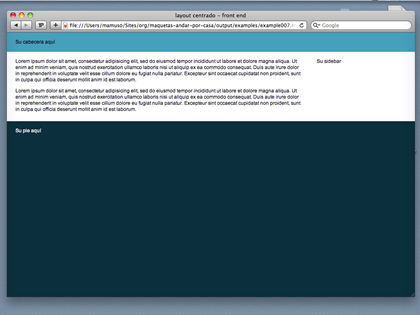

el típico layout centrado con franjas de parte a parte
Si te paras a pensar es como el anterior pero dando la vuelta al concepto, ahora dentro de cada franja vamos a tener un contenedor 'director' que va a marcar la altura.
De esta manera puedes rellenar cada franja para que ocupe de de parte a parte de pantalla y dejar el contenido localizado en el centro:
<div id="header">
<div class="wrapper">
Su cabecera aquí
</div><!-- .wrapper -->
</div><!-- #header -->
<div id="content">
<div class="wrapper">
Su contenido aquí
</div><!-- .wrapper -->
</div><!-- #content -->
...
Lo mejor es echarle echarle un vistacillo al ejemplo y escudriñarlo con firebug.